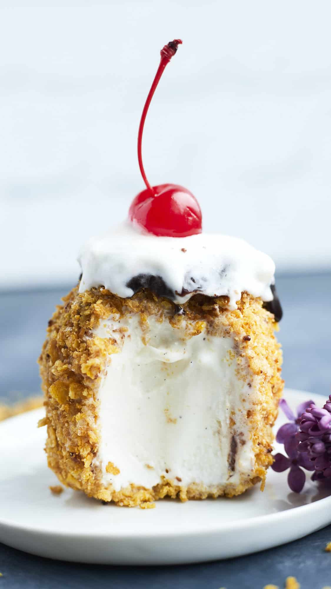

My Favorite Dishes
Korean Fried ice cream

Description
This fried ice cream has a perfectly golden, warm, and crispy exterior plus a cold and creamy vanilla ice cream center.
Ingredients:
- This fried ice cream has a perfectly golden, warm, and crispy exterior plus a cold and creamy vanilla ice cream center.
- 2 cups panko
- 2 Eggs
- Neutral cooking oil for deep frying (vegetable oil, corn oil, or canola oil.)
- Toppings of your choice (e.g., chocolate/strawberry sauce, whipped cream, strawberries …)
Instructions:
- Prepare a 1.5 qt box of your preferred ice cream (I used vanilla flavor). Using an ice cream scoop, divide the ice cream into 8 equal portions. Wrap each portion of ice cream with plastic food wrap, use your hands to shape them into balls or chicken drumstick shapes. Place the wrapped ice cream balls on a baking sheet and place them in the freezer for about 10 minutes.
- Add 1 cup of panko or breadcrumbs to a shallow plate. Take one frozen ice cream ball at a time, coat it thoroughly with the panko. Return the coated ball to the baking sheet in the freezer. Repeat this process for all of the ice cream balls.
- Place the coated ice cream balls back into the freezer and allow them to freeze overnight (or for a minimum of 4 hours) until they are completely solid.
- In shallow dish, beat 2 eggs. Add 1 cup of panko or breadcrumbs to another shallow dish.
- Take one frozen ice cream ball at a time, roll it in the beaten eggs, then coat it thoroughly with the panko. Place it back on the baking sheet in the freezer. Repeat for all the ice cream balls.
- In a medium pot, heat half pot of neutral cooking oil to around 355°F (180°C).
- Carefully place one coated ice cream ball in the hot oil. Fry the ice cream ball for about 10 to 15 seconds until it turns golden brown. (It is crucial to promptly remove the fried ice cream ball as soon as its surface turns golden brown, as the ice cream filling may melt rapidly in the hot oil. While frying this ice cream ball, ensure that you keep the remaining coated ice cream balls in the freezer to prevent them from melting while waiting.)
- Remove the fried ice cream balls from the oil using a spider strainer. Serve the fried ice cream ball immediately with toppings of your choice, such as chocolate or strawberry sauce, whipped cream, and fresh strawberries.